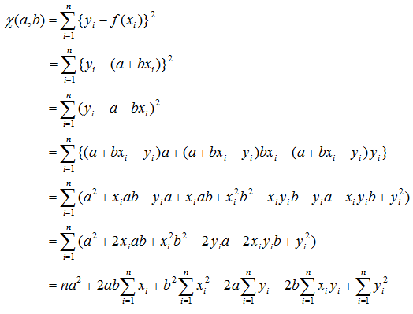
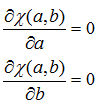
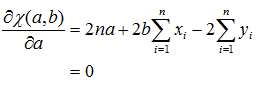
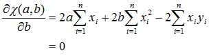
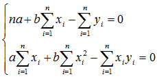

\[\begin{aligned}\chi(a,b)&=\sum_{i=1}^{n}\{y_i-f(x_i)\}^2\\&=\sum_{i=1}^{n}\{y_i-(a+bx_i)\}^2\\&=\sum_{i=1}^{n}(y_i-a-bx_i)^2\\&=\sum_{i=1}^{n}\{(a+bx_i-y_i)a+(a+bx_i-y_i)bx_i-(a+bx_i-y_i)y_i\}\\&=\sum_{i=1}^{n}(a^2+x_iab-y_ia+x_iab+x_i^2b^2-x_iy_ib-y_ia-x_iy_ib+y_i^2)\\&=\sum_{i=1}^{n}(a^2+2x_iab+x_i^2b^2-2y_ia-2x_iy_ib+y_i^2)\\&=na^2+2ab\sum_{i=1}^{n}x_i+b^2\sum_{i=1}^{n}x_i^2-2a\sum_{i=1}^{n}y_i-2b\sum_{i=1}^{n}x_iy_i+\sum_{i=1}^{n}y_i^2\end{aligned}\]

\[\begin{aligned}\frac{\partial\chi(a,b)}{\partial a}&=0\\\frac{\partial\chi(a,b)}{\partial b}&=0\end{aligned}\]

\[\begin{aligned}\frac{\partial\chi(a,b)}{\partial a}&=2na+2b\sum_{i=1}^{n}x_i-2\sum_{i=1}^{n}y_i\\&=0\end{aligned}\]

\[\begin{aligned}\frac{\partial\chi(a,b)}{\partial b}&=2a\sum_{i=1}^{n}x_i+2b\sum_{i=1}^{n}x_i^2-2\sum_{i=1}^{n}x_iy_i\\&=0\end{aligned}\]

\[\left\{\begin{aligned}na+b\sum_{i=1}^{n}x_i-\sum_{i=1}^{n}y_i&=0\\a\sum_{i=1}^{n}x_i+b\sum_{i=1}^{n}x_i^2-\sum_{i=1}^{n}x_iy_i&=0\end{aligned}\right.\]